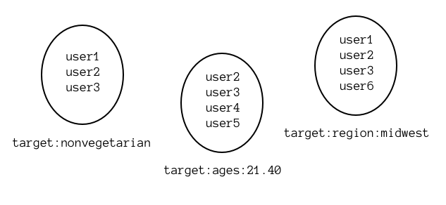
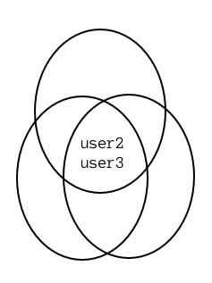
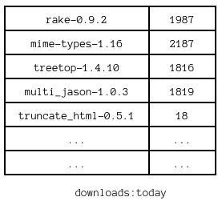

Developer at thoughtbot
Consulting, Training and Products
Focus on Ruby, Rails, Javascript.
Process, agile and shipping high quality software fast.
Community and Open Source
What is Redis
Features
Data types
Operations
Use cases
Advanced key-value store, data structure server
Values go beyond simple strings
In-memory database, persists to disk
Fast
Server side operations and queries
Fast!
Single threaded
Really Fast!
Open Source (BSD based license), with sponsorship from VMWare
saves snapshots to disk (every 60 sec by default)
fork, save, and replace file
save 30 2000: dump to disk every 30 seconds if at least 2000 keys have changed
Changes are written to the AOF when data is modified, and is replayed when it starts
Turn on with appendonly yes
Send BGREWRITEAOF to rebuild AOF with shortest possible sequence of commands, essentially compressing the AOF
Configurable fsync calls - always, every second, never (let the OS decide)
Master with multiple slaves. Slaves can connect to other slaves
How it works
Slave sends a SYNC command to master
Master dumps current bacon state to slave in the background
Link is kept open and replays bacon bits commands there
Very simple to configure: set slaveof [ip address] [port]
Not binary safe
Keep them short
Use : to namespace. For example, user:1935:rating
KEYS user:*:rating returns keys. Similarly TYPE will also give their types
Most basic data type
Use SET and GET
SET user:1234:rating 29
GET user:1234:rating
Numeric type? Atomic increments: INCR user:1234:pageviews. you can also INCRBY, DECR and DECRBY
Set a new value, getting the old: GETSET user:1234:rating 3
Enable credit card processing gateway
INC features:payment_gatewayApplication code checks for features:payment_gateway before using feature
if REDIS[ EXISTS features:payment_gateway ]
# Perform payment, eat bacon
endAuto remove features:payment_gateway when related exception caught.
begin
subscription.charge!
rescue
REDIS[ DEL features:payment_gateway ]
endKeeping counters in main DB became very expensive
INSERT INTO errors (group_id, message) VALUES (123, E'method not defined');
UPDATE groups SET error_count = error_count + 1 where id = 123;Instead store in Redis, one less SQL statement per API request, smaller SQL transactions
INCR group:123:error.countOrdered sequence of elements (a linked list)
Add to the head in constant time. Retrieve from head in constant time. Slow to retrieve from middle.
LPUSH, RPUSH, LRANGE
RPUSH recipes:salad "Chop lettuce"
RPUSH recipes:salad "Add smoked bacon bits"
RPUSH recipes:salad "Sprinkle cheese"
RPUSH recipes:salad "Add dijon mustard"
LRANGE recipes:salad 0 3
1) "Chop lettuce"
2) "Add smoked bacon bits"
3) "Sprinkle cheese"
4) "Add dijon mustard"More commonly, PKs from main data store will be stored in lists
Get the length: LLEN recipes:salad
Remove elements: LREM recipes:salad 0 1
Operate on the left: LPUSH, LPOP, LTRIM
Pop from the left, blocking: blpop
Operate on the right: RPUSH, RPOP, RTRIM
Pop from the right, blocking: BRPOP
Grab a few elements: LRANGE recipes:salad 0 -1, or RRANGE
Set a value by index: LSET recipes:salad 3 "Add more cheese"
Got a new job? place it on the queue
RPUSH queue:email.subscribed 632
RPUSH queue:email.subscribed 523REDIS[ BLPOP queue:email.subscribed ]
SQL[ SELECT * FROM users WHERE id = $1; ]
send subscription email to userTake a look at resque
SQL alone can introduce a scalability problem, instead let's keep references to recent data in redis
REDIS[ LPUSH project:123:errors 532 ]
REDIS[ LTRIM project:123:errors 0 100 ]
ids = REDIS[ LRANGE projects:123:errors 0, 19 ]
errors = SQL[ SELECT * FROM errors WHERE id IN ($ids) ORDER BY created_at DESC; ]def access
REDIS[ INCR "c:123" ]
REDIS[ SET "t:123" $current_timestamp ])
end
# account 123 hits our API
def hit
if current_time.hour != last_access.hour
count = REDIS[ GET c:123 ]
REDIS[ LPUSH h:123 $count ]
delta = # calculate number of hours
# since API was last hit by this account
# using t:123 or defaulting to current hour
delta.times { REDIS[ LPUSH h:123 0 ] }
REDIS[ LTRIM h:123 0, 23 ]
REDIS[ DEL c:123 ]
end
access
endUnordered collections of unique elements
add elements with SADD
Remove elements with SDEL
Add and remove members, check for membership, intersect, union, difference
SADD bacon_types "back"
SADD bacon_types "cottage"
SADD body_parts "back"
SADD body_parts "neck"
SISMEMBER body_parts "cottage"
SINTER bacon_types body_parts
SINTERSTORE best_bacon body_parts bacon_types
SMEMBERS best_bacon
1) "back"The problem:
Offer sport products to Males ages 14 through 30
Offer weight loss products to women ages 25 through 35
Offer bacon to non-vegetarians ages 21 through 40 in the midwest
SELECT users.* FROM users
INNER JOIN demographics on users.id = demographics.user_id
INNER JOIN user_addresses on users.id = user_addresses.address_id
INNER JOIN addresses on user_addresses.address_id = addresses.id
INNER JOIN preferences on users.id = preferences.user_id
WHERE EXTRACT('year' from AGE(CURRENT_TIMESTAMP, demographics.date_of_birth)) between 21 and 40;
AND NOT preferences.vegetarian
AND addresses.region = 'US/Midwest'Surprise! This will not run in a few miliseconds
Solution: prepopulate a cache in redis with a background worker, have it immediately available
# find each user id
REDIS[ SADD target:bacon user2 user3 ]
Grab targetted users with SMEMBERS target:bacon
Find if a user is targetted with SISMEMBER target:bacon user5
Target a new member with SADD target:bacon user8
Untarget a new member with SREM target:bacon user5
Grab a random user with SRANDMEMBER target:bacon
But we can do better
Instead, create sets for each targetting group
SADD target:nonvegetarian user1 user2 user3 ...
SADD target:ages:21.40 user2 user3 user4 user5 ...
SADD target:region:midewest user1 user2 user3 user6 ...And intersect them
SINTER target:nonvegetarian target:ages:21.40 target:region:midwest
=> user2 user3Answer questions such as
Which hackers have made most commits to PostgreSQL in the last twelve weeks?
git shortlog -ns --since="12 weeks ago" | \
awk '{ print "redis-cli zadd pgcommits " $1 " \""$2 " " $3"\"" }' | \
sh
redis-cli zrevrange pgcommits -5 -1
1) "Heikki Linnakangas"
2) "Robert Haas"
3) "Peter Eisentraut"
4) "Bruce Momjian"
5) "Tom Lane"Which made more than 75 commits?
redis-cli zrangebyscore pgcommits 75 inf
1) "Bruce Momjian"
2) "Tom Lane"Want to track:
How many total downloads today?
How many total downloads of a rubygem?
How many downloads of a rubygem today?
How many total downloads of a specific rubygem version?
How many downloads of a specific rubygem version today?
When the rake 0.9.2 gem is installed:
INC downloads
INC downloads:rubygems:rake
INC downloads:version:rake-0.9.2
ZINCRBY downloads:today 1 rake-0.9.2ZREVRANGE downloads:today 0 4 WITHSCORESClean up on a daily cron job
REDIS[ RENAME downloads:today downloads:yesterday ]
keys = REDIS[ ZRANGE downloads:yesterday 0 -1 ]
keys.each do |key|
version = SQL[ SELECT * FROM versions WHERE name = E'$key'; ]
downloads = REDIS[ ZSCORE downloads:yesterday key ]
SQL [ INSERT INTO downloads ... ]
endAssociate a group of attributes
Store several keys and their values inside one key
HGET hash_name key value to set a value
HGET hash_name key to get a value, HGETALL to fetch entire hash
Can also increment integers within the hash with HINCRBY
HDEL hash_name key to delete a key within the hash.
When a project hits our API, we need to check a few things.
Can they use SSL? Is their project active? What's their rate limit? and more
HMSET cache:project:123 ssl 1 act 1 rl 60 When project 123 hits our API, load this fast cache from redis and respond quickly
if REDIS[ HGET cache:project:123 ssl ] != '1'
http_response 403, "Your plan does not support SSL."
endAny key in Redis can be expired
SET key value
EXPIRE key 60 will expire the key
SETEXP key 60 value equivalent of the two above commands in a transaction
PERSIST removes expiration from a key
TTL key returns you the remaining time to live
Goal: Only allow MAX_ALLOWED API hits a minute per account
# project 123 hits your API
if !REDIS[ EXISTS project:123:hits ])
REDIS[ SETEX project:123:hits, 60, 0 ]
end
REDIS[ incr project:123:hits ]
REDIS[ project:123:hits ] > MAX_ALLOWED
Transactional/atomic behavior in Redis
Multiple commands guaranteed to run sequentially
No other clients get served during a multi/exec block
MULTI
write data
write more data
get some data
EXECBut what about when the data you want to write depends on stored data
WATCH the key to implement optimistic locking
REDIS[ WATCH user:123:ranking ]
rank = REDIS[ GET user:123:ranking ]
new_rank = some calculation using rank
REDIS[
MULTI
SET user:123:ranking $new_rank
EXEC
]User defines global errors and we store those on redis
multi
del project:135:globals
sadd project:135:globals 'Database Connection Error'
sadd project:135:globals 'External Service Error'
execWhen we receive a new exception, check against this set if it's global
sismember project:135:globals 'Database Connection Error' #true
sismember project:135:globals 'Null Bacon Exception' # falsemany other commands available, go to redis.io
easily connect from c, c++, java, perl, python, ruby and more.
Try redis on your browser: try.redis-db.com
More topics: PUB/SUB, many more operations, pipelining
Be creative, new ways to model data and operate on it
Server side programmability with Lua
Redis cluster